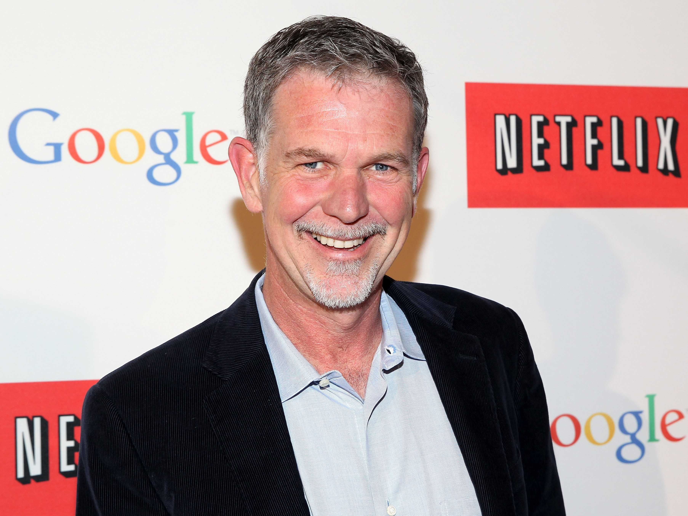

Netflix CEO reveals how much vacation he takes, and it's a lot more than most people take off
At Tuesday's DealBook conference, organized by The New York Times, Netflix CEO Reed Hastings said he took a full six weeks of vacation per year and it was "helpful." He said he was "open about it internally, to try to set a good example."
Netflix doesn't have a vacation policy, according to its widely circulated culture deck, opting instead for "unlimited" vacation time. (Business Insider offers the same policy.)
This practice has been both lauded and widely criticized because it leaves employees confused as to how much vacation time they should actually take. As a result, they could end up taking much less than they would if there were specific guidelines in place — something Hastings acknowledged at the conference.
The same logic applies to Netflix's recent announcement that it would offer unlimited parental leave within the first year of employees' parenthood.
But Hastings' revelation suggests that at least some execs really do encourage their employees to take time off by setting a precedent.
"Netflix leaders set good examples by taking big vacations — and coming back inspired to find big ideas," one slide in the culture deck reads. Apparently, Hastings wasn't just theorizing.
According to one study, in 2013 American employees took an average of 16 days of vacation, down from about 20 in 2000. Another survey found that 72% of senior managers said that even if their companies offered unlimited vacation days, they wouldn't use any more than they had been.
Netflix doesn't track its employees' vacation time, Hastings confirmed at the conference. But in 2011 a spokesman told The Wall Street Journal that Netflix staffers took about three to five weeks off a year.
Research suggests that taking periodic vacations can boost employees' productivity, concentration, and overall satisfaction at work.
"Just as you would expect, you often do your best thinking [when] you're off hiking in some mountain," Hastings told Andrew Ross Sorkin, New York Times columnist and DealBook founder. "You get a different perspective on something."